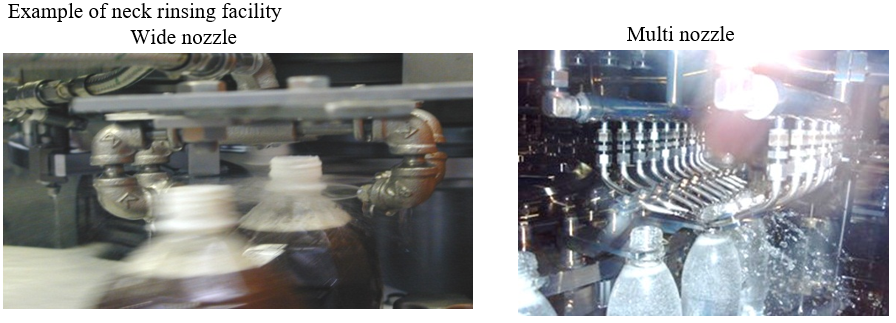
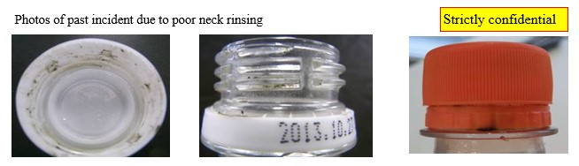

| Defect mode | Packaging appearance defect / Microbe contamination / Organoleptic defect / Mixing different liquid |
| Subjected packaging | All packaging |
| Subjected line | All lines |
◆Wash the screw parts of packagings by using a neck rinser between filling and sealing. |
||
・Specify the number of nozzles, nozzle position (height, distance to containers, spray angle), flow rate, and pressure that allow the appropriate cleaning of spillage after verification. (It is desirable to prevent neck rinsing water from being mixed in a product as much as possible.) |
||
・Cleanliness varies depending on the characteristics (viscosity and foaming) of contents, so verify the rinsing performance if there are significant changes in contents. |
||
・Since the spillage volume may increase when the filling speed changes (an increase in speed, particularly), verify the rinsing performance. |
||
◆Prevent spillage as much as possible during transfer after filling. |
||
・Ensure no container shaking due to a reverse step or contact with the transfer guide. |
||
Task 1 |
 |
|
| Procedure | Visually check the neck rinser spraying state and transfer state and check the flow rate and pressure. | |
| Frequency or timing | Set locally (Setting example: At start, every few hours during production) | |
| Operating limit or standard condition | Set locally | |
| Task 2 |
|
|
| Procedure | Check the neck rinser nozzle position (height, distance to containers, spray angle). | |
| Frequency or timing | After the operation (maintenance, change over, etc.) on and around the neck rinser nozzles | |
| Operating limit or standard condition | Set locally | |
| Task 3 |
||
| Procedure | It is desirable to perform sampling inspection for neck dirt/dust. (Visual check or residual sugar test) | |
| Frequency or timing | Set locally | |
| Operating limit or standard condition | No dirt/dust | |
|

|
|

|
| Defect mode | Mixing different liquid / Microbe contamination / Organoleptic defect |
| Subjected packaging | All packaging |
| Subjected line | All lines |
◆Rinsing water must comply with the management items of process water (water that may enter products). (For the requirements, see 1.3.4.1 "General requirement for water treatment".) |
||
・Add chlorine (up to 1 ppm) to neck rinse water to control microbes. |
||
・For the quality and management of rinse water in the aseptic line, see the description about aseptic filling in 1.3.11.4. |
||
◆When the line is stopped, neck rinsing must be stopped. (This is because water keeps entering products. It also decreases the temperature in the hot filling line, leading to sterilization defects.) |
||
| Task 1 |
||
| Procedure | Perform sanitation on pipes and nozzles (retention with chlorine, circulating disinfectant). | |
| Frequency or timing | The necessary frequency must be set locally according to the equipment. | |
| Operating limit or standard condition | ||